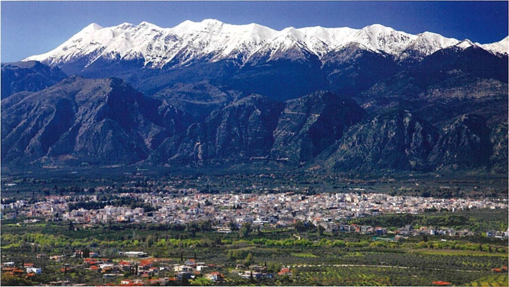
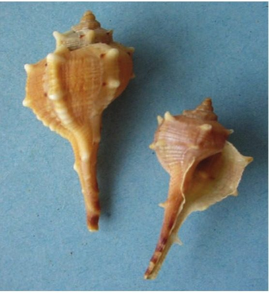
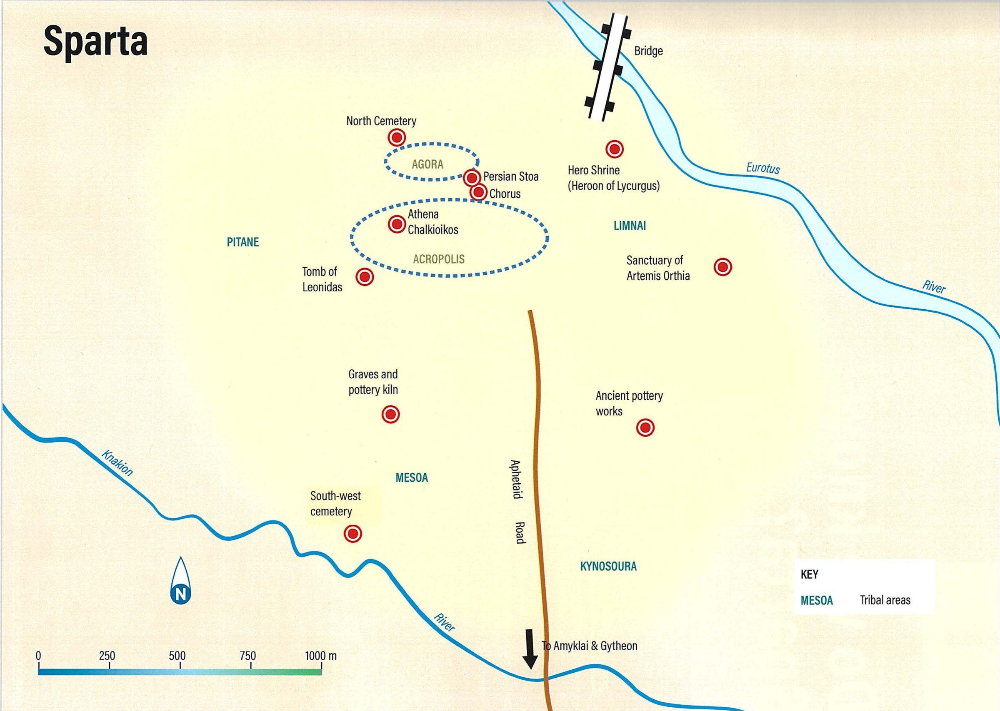
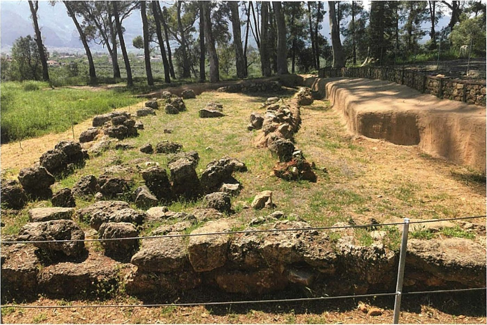
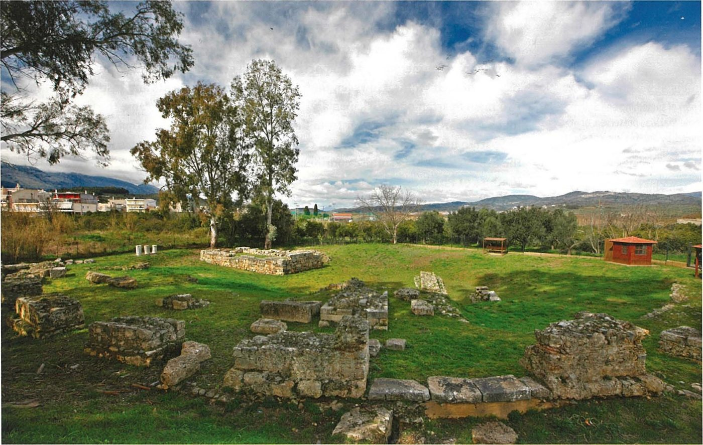
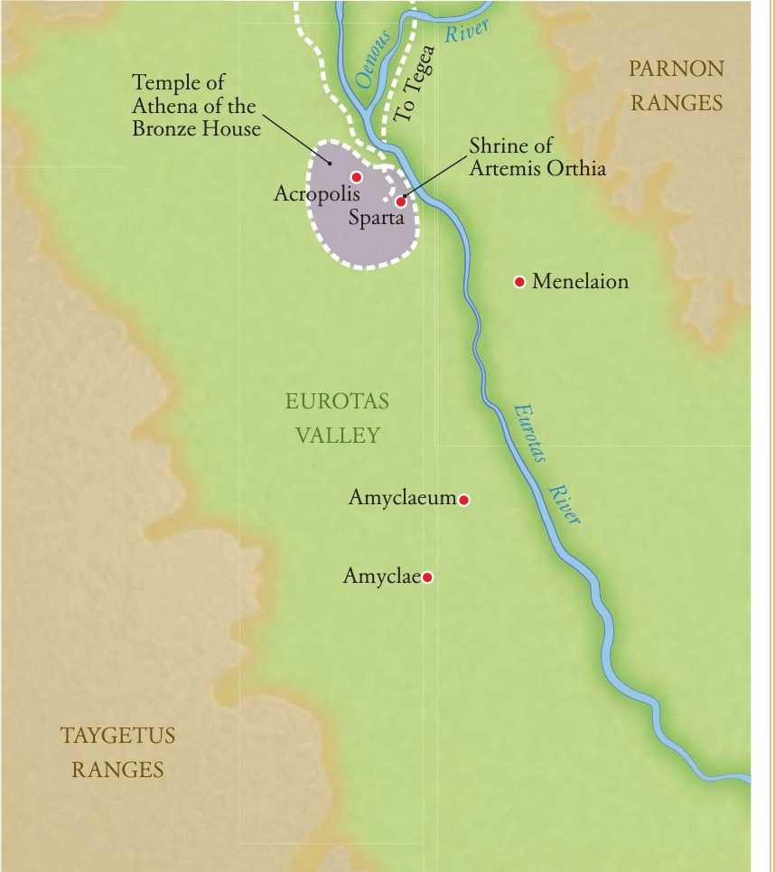
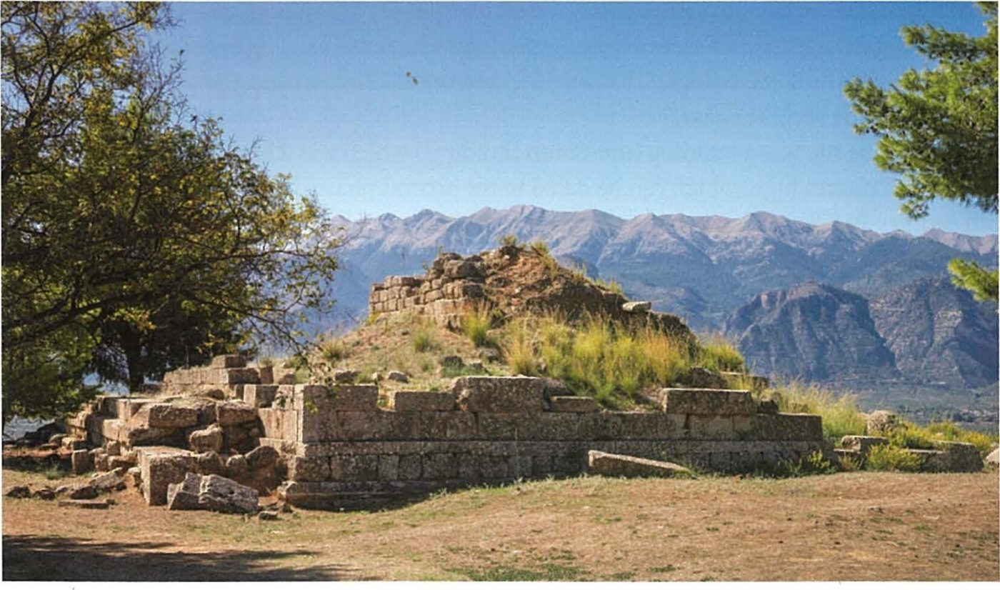
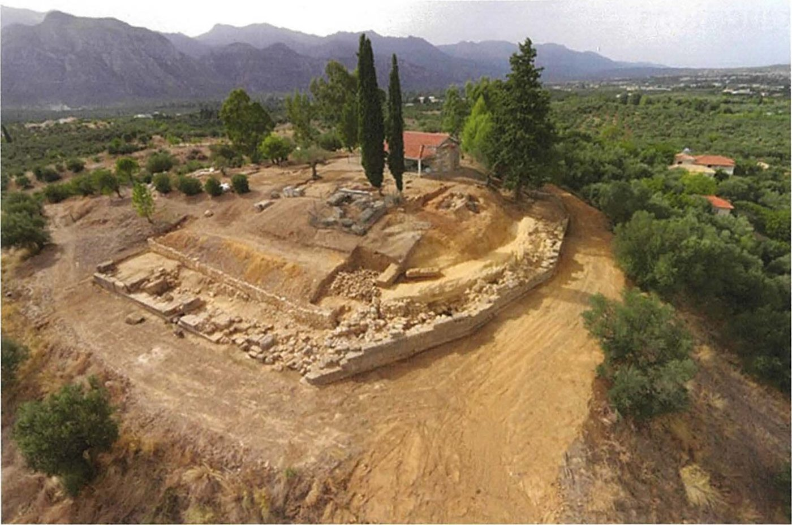
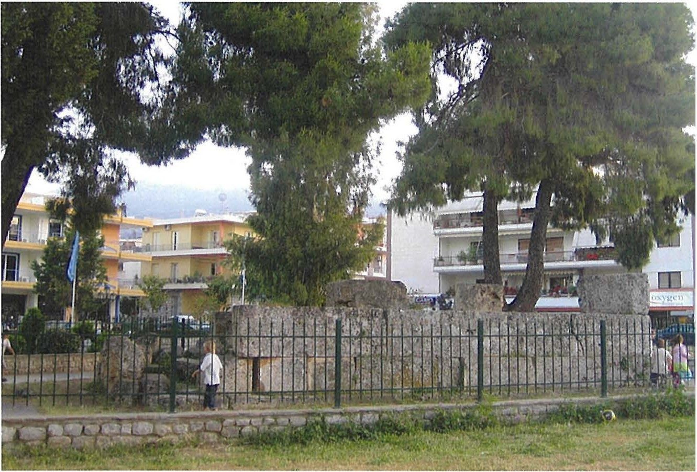

Spartan society to the Battle of Leuctra 371 BC · Lesson 2
The land and the site of Sparta
How did the land shape Spartan society — and what can its ruins tell us?
Year 12 Ancient History · Section II, Option G · Present with → or space · Read on a phone with R

Connect · 3 minutes · cold call
From words to the land
Almost everything we know about Sparta comes from outsiders writing at a distance. Even Thucydides admitted that Spartan secrecy hid the size of their army.
The land itself is evidence. Mountains, rivers and ruins cannot exaggerate or flatter — but they still have to be interpreted.
One key idea from Lesson 1, in one sentence.
Learning intentions and success criteria · 2 minutes
Today’s goals
- explain how Sparta’s setting and resources shaped its society
- analyse what the physical site of Sparta can and cannot tell us
- describe three natural features or resources and link each to an aspect of Spartan society
- name and locate the main parts of the site: the villages, acropolis, agora, Sanctuary of Artemis Orthia, Menelaion and Amyklaion
- explain why Thucydides thought Sparta’s ruins would mislead later generations
- write a 3-mark outline answer that matches the marks
Natural features are the land itself: mountains, rivers, plains, coast, climate. Resources are what the land provides. Neither means buildings or events.
Note-making · today’s routine
Your notes replace the textbook chapter
questions and key terms
short phrases, arrows (→ led to), abbreviations (c. = about)
- 1Listen and look firstDon’t copy while the slide is being explained.
- 2Write your own notes at each ✎ checkpointPhrases, not sentences. Use arrows for cause and effect.
- 3Compare with the model notesThey appear one row at a time. Add what you missed in a second colour.
- 4Copy each cue question into the left columnLater, cover your notes and answer the cue questions from memory.
- 5Finish with a three-sentence summaryFive checkpoints: setting · natural features · resources · the site · what the site can tell us.
Key vocabulary
Words you will use today
| The land | Meaning |
|---|---|
| Peloponnese | the large peninsula of southern Greece, joined to the mainland at the Isthmus of Corinth |
| Laconia | the south-eastern Peloponnese, Sparta’s home region; the state was called Lakedaimon |
| Messenia | the fertile region west of Mt Taygetus, conquered by Sparta and farmed by helots |
| Eurotas | the river flowing south past Sparta through a fertile valley to the Laconian Gulf |
| Taygetus · Parnon | the mountain ranges west and east of the Eurotas valley |
| Gytheion | Sparta’s chief port and naval base, a perioikic town |
| murex | a sea snail that produced a prized red-purple dye |
| People and the site | Meaning |
|---|---|
| perioikoi | free “dwellers around” in the towns of Laconia; served in the army but had no political rights at Sparta |
| helots | the unfree population of Laconia and Messenia who farmed the land for the Spartiates |
| acropolis | the highest hill of a Greek city, usually holding its most important temple |
| agora | the religious, commercial and political centre of a Greek city |
| sanctuary | a sacred area for a god, with an altar and often a temple |
| hero-shrine | a place where a famous dead person, such as Menelaus or Helen, was worshipped |
Spelling: Cooley’s translations use Greek forms (Taygetos, Lakonia, Lakedaimonians, Amyklai). In your own writing, Taygetus, Laconia and Lacedaemonians are also correct — just be consistent. The syllabus spells periokoi; most books use perioikoi.
1 · Where was Sparta? · I do — map think-aloud
Sparta’s world
- 1LaconiaSparta’s home region in the south-eastern Peloponnese. The Greeks called the state Lakedaimon.
- 2Eurotas RiverFlows south past Sparta through a fertile, well-watered valley.
- 3Mt TaygetusThe western wall of the valley — over 2,400 m.
- 4Mt ParnonThe lower eastern wall. Hills close the valley to the north.
- 5MesseniaAcross Taygetus: rich plains, conquered by Sparta.
- 6GytheionSparta’s port on the Laconian Gulf — a perioikic town.
- 7KytheraThe island off the coast, famous for murex purple dye.
1 · Where was Sparta? · We do — reading a source
Why Messenia mattered
[...] to our king, dear to the gods, Theopompos,
Through whom we captured spacious Messene,
Messene good to plough and good to plant.
For it they fought ceaselessly for nineteen years
With their spears, our fathersʼ fathers
With ever long-suffering hearts;
And in the twentieth they abandoned their rich tilled fields
And fled the great ranges of Ithome.
Tyrtaeus, fragment 5 · mid-7th century BC · a Spartan war poet, writing two generations after the conquest · trans. K. Hughes · Cooley A5
What made Messenia worth twenty years of war?
“Good to plough and good to plant” — rich farmland. Paul Cartledge thinks the most likely motive was land hunger.
Why does it matter that Tyrtaeus was a Spartan?
He is our earliest witness and an insider — but a war poet stirring Spartans with their grandfathers’ victory.
Conquering Messenia (c. 735–715 BC) roughly doubled Sparta’s land, but created a second, larger helot population across a mountain range. When Thebes freed Messenia in 370/69 BC, the Spartan system broke.
Notes checkpoint 1 of 5
Setting: where was Sparta?
Write your own notes first. Then compare, row by row, and add what you missed in a second colour.
2 · Natural features · I do
A valley walled by mountains
A fertile, well-watered plain along the Eurotas, walled by Taygetus to the west and Parnon to the east, closed by hills to the north. Only a few routes lead in.
Hard to invade. Athenian raids in the Peloponnesian War struck only coastal towns; no foreign army reached the city until the Thebans in 370/69 BC.
Taygetus divided Laconia from Messenia, so controlling the Messenian helots meant marching an army over the mountains.
The valley was the natural route south to the coast, where Gytheion was Sparta’s port.
2 · Natural features · I do — the writing move
Feature → what it allowed → what it caused
The Taygetus range separates Laconia from Messenia, so conquering Messenia doubled Sparta’s farmland but created a second helot population across the mountains.
Your turn, aloud to a partner: “The Eurotas valley ran south to the sea, so …”
2 · Natural features · two more features If time
A changing — and shaking — landscape
Inland from Taygetos and below it lies Sparta and Amyklai, where there is the temple to Apollo, and Pharis … The polis is sited in something of a hollow, though mountains are included within its limits. No part of it is now marshy, though in ancient times the area in front of the city was marshy and was called Limnai (‘Marshes’), and the temple of Dionysos in Limnai stood on wet ground.
Strabo, Geography 8.5.1 · a geographer of the Roman period, writing in the late 1st century BC or early 1st century AD · trans. in Cooley K4
“In ancient times”: the landscape itself changed. Limnai — one of Sparta’s villages — was marshy ground beside the Eurotas, where the Sanctuary of Artemis Orthia stood.
“Mount Taygetos was shaken so that many peaks broke away, and the entire city was devastated, except for five houses”
Plutarch, Life of Kimon 16.4, describing the great earthquake of c. 464 BC · written c. AD 100 · trans. in Cooley E64
Laconia is earthquake country — a danger as well as a defence. The helots seized the moment to revolt: geography and the helot system were tied together.
Check for understanding · gesture vote · hold up 1–4 fingers
Which of these is not a natural feature of Sparta?
- 1The Taygetus range
- 2The Eurotas River
- 3The Temple of Athena Chalkioikos
- 4The Laconian Gulf
A temple is man-made. The 2024 HSC markers listed “understanding what constitutes a natural feature” as an area for students to improve.
Notes checkpoint 2 of 5
Natural features — and what they did
3 · Resources · We do — two writers, a century apart
Two writers on the wealth of the land
Being blessed with fertile land and a large population, the country rapidly grew prosperous and strong.
Herodotus, Histories 1.66.1, on Sparta after the reforms credited to Lycurgus · written c. 430s–420s BC · trans. B. Wilson · Cooley H9
As a result, although the land could support one thousand five hundred cavalry and thirty thousand hoplites, the total number was not even one thousand.
Aristotle, Politics 2.9, 1270a29 · written 330s–320s BC · trans. in Cooley D28
Both agree the land was rich. Herodotus uses it to explain Sparta’s rise; Aristotle, about a century later, to explain its decline — rich land, yet fewer than a thousand citizen soldiers.
Neither says who actually farmed it. Who did?
3 · Resources · what the land provided
Resources — and who worked them
The Eurotas plain and, above all, Messenia: grain, olives, vines. Cavanagh lists corn, oil and wine, “in particular of Messenia”.
Worked by helots
“Traces of iron workings are common” at Boia in south-eastern Laconia, with lead and copper nearby. Iron → tools, weapons, Sparta’s iron money. Tin for bronze was imported.
Worked by perioikoi
“High quality building stone”, though the local marble “was hard to work”. A quarry rule at Gytheion: “Let no one dig anything out.”
Worked by perioikoi
The area around Kythera “was famous for producing the prized purple dye” — a luxury. Alcman’s chorus sings of “an abundance of purple”.
Coastal communities
From the mountains: it “may well have been another significant economic resource”.
Gytheion “served as chief naval base”; perioikoi of the harbour towns “were involved in overseas trade and fishery”.
Perioikoi
Quotations from the introductions and sources in Cooley’s Sparta (W. G. Cavanagh on archaeology, S. Hodkinson on inscriptions); the quarry inscription is Cooley K6.
3 · Resources · We do — because, but, so
Link a resource to Spartan society
The Eurotas plain and Messenia were fertile …
“Laconia had iron and building stone, but citizens were not meant to work as craftsmen, so …”
… mining, metalwork and quarrying fell to the perioikoi, who Cooley says “presumably exploited” the region’s resources.

Notes checkpoint 3 of 5
Resources — who worked them, and so what?
4 · The site of Sparta · I do — the plan
A city of villages

1 2 3 4 5- 1PitanaHerodotus met a Spartan “in Pitana (that was his village)”.
- 2MesoaThe Suda calls the poet Alcman “a Lakonian from Messoa”.
- 3Limnai“Marshes” — low ground beside the Eurotas (Strabo).
- 4KynosouraThe fourth village, to the south.
- 5AmyklaiAbout 6 km south, along the road to Gytheion.
Graves around Sparta from about 900 BC are an early sign of these scattered villages.
4 · The site of Sparta · We do
A city without walls
The Spartiates, since their city had no walls, were stationed here and there to guard it – there seemed few of them and there were few.
Xenophon, Hellenika 6.5.27–28, on the Theban invasion of 370/69 BC · an Athenian with close ties to Sparta, writing in the 360s–350s BC · trans. in Cooley K5
Cooley: “The town of Sparta remained open until the Hellenistic period.”
Sparta had no city walls …
4 · The site of Sparta · I do — the centre
The heart of the town
- 1AcropolisOnly a low hill, not fortified. On it, the Temple of Athena Chalkioikos — “of the Bronze House”.
- 2AgoraThe centre of public life — though “the agora’s exact location is disputed”. Nearby, the Skias, “built to shelter the assembly”.
- 3Persian Stoa and ChorosA stoa built from Persian War spoils, and the Choros (“Dancing”), where young men danced at the Gymnopaidiai.
- 4Sanctuary of Artemis OrthiaBy the Eurotas, in Limnai: rich finds, a modest temple.
4 · The site of Sparta · a source If time
Pausanias walks through Sparta
The Lakedaimonians do not have an akropolis rising up to a prominent height, like the Kadmeia at Thebes or the Larisa at Argos. But there are hills in the city, and they call the tallest of these the akropolis. [2] The temple of Athena, known both as Poliouchos (‘Holding the City’) and Chalkioikos (‘Of the Bronze House’) has been built there. … many years later the Lakedaimonians made Athena’s temple and her statue both in bronze. Gitiadas a local architect oversaw the work.
The most impressive thing in the agora is what they call the Persian Stoa since it was made of spoils from the Persian Wars: over time they have altered it to its current size and splendour.
Pausanias, Description of Greece 3.17.1–2 and 3.11.3 · a Greek traveller writing for educated readers under Roman rule, c. AD 160s–170s · trans. in Cooley K3, K2
Pausanias wrote over 600 years after the Persian Wars. Why does “over time they have altered it” matter?
He describes the town of his own day. Buildings had been rebuilt and enlarged, so what he saw is not necessarily what 5th-century Spartans saw.

4 · The site of Sparta
The Sanctuary of Artemis Orthia

By the Eurotas, in the marshy village of Limnai.
Ivories and lead figurines — one of the richest sites in Sparta for archaeologists.
Modest: about 16 × 7 m, roughly one-eighth the size of the temple of Hera at Olympia (Cavanagh, in Cooley).
How much is certain? Cooley: “only two classical sites, the sanctuary of Artemis Orthia and the temple of Athena on the acropolis have been identified for certain.” Even the kings’ tombs “have not, alas, yet been located”.
4 · The site of Sparta · two great sanctuaries outside the town
Beyond the town: the Menelaion and the Amyklaion


At Therapne, on high ground east of the Eurotas, south-east of the town. A shrine of c. 700 BC to Menelaus and Helen, beside Mycenaean remains. A bronze flask: “Deinis dedicated these to [Helen, wife of] Menelaos.” (Cooley C29)

Apollo and Hyakinthos, about 6 km south: home of the Hyakinthia. “The people of Amyklai always return for the Hyakinthia for the hymn to Apollo” (Xenophon, Cooley C70). The 421 BC treaty with Athens stood “next to the statue of Apollo at Amyklai” (Thucydides 5.23).
Notes checkpoint 4 of 5
The site of Sparta
5 · What can the site tell us? · We do — reading a source
Thucydides imagines the ruins of Sparta
[10.2] For example, if the city of the Lakedaimonians were to be destroyed and abandoned, and all that was left were its temples and the foundations of its buildings, I suspect that future generations would find it impossible to believe historians’ accounts of its present power. Yet today they occupy two fifths of the Peloponnese, control the whole of it, and are the leaders of an extensive alliance outside its boundaries as well. Yet to the uninformed observer its physical remains would seem to fall far short of the reality, because it lacks the conventional layout of a modern city, has no temples or extravagant public buildings, and is simply a collection of villages typical of ancient Greek society. But if Athens, by contrast, were to suffer the same fate, the same observer would overestimate its power twice over on the basis of the visible remains of that city.
Thucydides, History of the Peloponnesian War 1.10.2 · an Athenian, writing in the late 5th century BC · trans. B. Wilson · Cooley G2
What does he predict?
What is his reason?
Why compare Athens?
5 · What can the site tell us? · Vote first, then the evidence
Was Thucydides right?
Thumbs up = yes · sideways = partly · thumbs down = no. Be ready to give one reason.

No walls, no grand public buildings, a temple at Orthia of about 16 × 7 m. Few visitors today would guess Sparta’s power.
Cavanagh: “The picture of Sparta as no more than a collection of villages is an overstatement by Thucydides”, because “like many classical cities it had much open space given over not only to public buildings, but to squares, hippodromes and palaistrai.”
The Archaic and Classical levels are “masked or destroyed by Roman building”; modern Sparta sits on top; the site “served as a quarry for lime burners”; inscriptions on bronze were “later melted down for their metal content” (Hodkinson).
Absence of evidence is not always evidence of absence.
5 · What can the site tell us? · the inquiry question
What the site can — and cannot — tell us
- a state confident in its army and its mountains — no walls until the Hellenistic period
- little interest in the showy public building of Athens
- where the wealth went: rich offerings at Orthia, the Menelaion and the Amyklaion — sanctuaries and festivals
- a link to the heroic age: Menelaus and Helen honoured at a Mycenaean site
- how powerful Sparta really was — Thucydides’ point
- much of the classical town, buried under Roman and modern building
- where the agora was exactly, or where the kings were buried
- how buildings were used in the 5th century — Pausanias saw a Roman-era town
Notes checkpoint 5 of 5
What the site can and cannot tell us
Finish your notes
Summary: three sentences
- How did the land shape Spartan society?
- What was the site of Sparta like?
- What can its ruins tell us — and not tell us?
Sparta’s fertile Eurotas valley and conquered Messenia, walled by Taygetus and Parnon, gave it rich farmland worked by helots and natural defences, but also a large helot population to control across the mountains. The town itself was an open cluster of villages around a low acropolis and agora, with major sanctuaries at Orthia, the Menelaion and the Amyklaion. Its modest ruins would mislead a visitor about its power, as Thucydides predicted, but they also show where Spartans chose to spend their wealth — on gods and festivals rather than walls and showy buildings.
6 · Answering HSC questions
Two 3-mark questions from recent HSC papers
25 marks, about 45 minutes. Three or four parts, from short answers to one worth 10–15 marks.
About 4–5 minutes. Three accurate, specific points. NESA’s own sample answers are about 40 words.
NESA: “Sketch in general terms; indicate the main features of”.
Question 1: we take NESA’s sample answer apart. Question 2: you write, then mark your own.
HSC 2024 · Section II · Question 11 (a) · 3 marks
Outline the natural features of Sparta during this period.
Question 1 · I do — watch how the question is taken apart, then how a full-mark answer is built.
HSC 2024 Q11(a) · I do — deconstruct the question
What the question is really asking
Name each feature and say briefly what it was or did. The markers wanted “an outline rather than just identify or list natural features”.
The land itself: mountains, river, plain, coast, soil, earthquakes. Not the acropolis, not the agora, not the Battle of Leuctra.
Laconia and the Eurotas valley — Messenia can come in as Spartan territory — from the Archaic period to 371 BC.
About 4–5 minutes · three named features, each with a brief “what it did” · about 40–80 words · no introduction, no conclusion.
HSC 2024 Q11(a) · the marking guidelines and the markers’ feedback
What the markers rewarded
| Marks | Criteria |
|---|---|
| 3 | Provides accurate information relevant to the question |
| 2 | Provides some information relevant to the question |
| 1 | Makes a general statement(s) relevant to the question |
provide an outline rather than just identify or list natural features (a)
providing appropriate depth in responses, guided by the mark value of each part of the questionunderstanding what constitutes a natural feature (a)
Source: NESA, 2024 HSC Ancient History Marking Guidelines (Section II, part (a)) and the 2024 marking feedback for Question 11.
HSC 2024 Q11(a) · I do — NESA’s sample answer, annotated
What a 3-mark answer looks like
Sample answer from the NESA 2024 HSC Ancient History Marking Guidelines · 42 words
Marker’s margin
Even sharper: strictly, the Eurotas flows past the town on its east side, and its valley leads down to the Laconian Gulf, where Gytheion was the port. The markers accepted the compressed version — yours can be exact.
HSC 2024 Q11(a) · I do — three answers that fall short
Why answers drop marks
Sparta had lots of mountains and a river, which protected it and gave it good farmland.
True, but nothing is named. It could describe almost anywhere in Greece.
The natural features of Sparta were Mt Taygetus, Mt Parnon, the Eurotas River and the Laconian Gulf.
Accurate names, but nothing on what they were like or did. The markers wanted “an outline rather than just identify or list”.
Sparta’s main features were its acropolis with the Temple of Athena Chalkioikos, the agora, and rich volcanic soil.
Buildings are not natural features, and “volcanic soil” belongs to the Cities of Vesuvius — the confusion the 2021 markers warned about.
Written for this lesson to show the marking criteria — not real student answers.
HSC 2024 Q11(a) · the formula If time
The 3-mark outline formula
Sparta lay in , in the Peloponnese, on the plain of the River.
The valley was enclosed by to the west and to the east, which .
To the south the valley opened onto , where served as Sparta’s port.
Sparta lay in Laconia, in the south-eastern Peloponnese, on the fertile plain of the Eurotas River. The valley was enclosed by the Taygetus range to the west and the Parnon range to the east, which made it difficult to invade. Across Taygetus lay the even richer plain of Messenia, and to the south the valley opened onto the Laconian Gulf, where Gytheion served as Sparta’s port.
HSC 2021 · Section II · Question 11 (a) · 3 marks
Outline the key features of the site of Sparta.
Question 2 · We do, then you do — take it apart together, then write it yourself.
HSC 2021 Q11(a) · We do — deconstruct together
What does this question want?
Same as before: name the main features and sketch them briefly.
The layout and the main places — villages, acropolis, agora, sanctuaries — as well as the setting.
The town and its sanctuaries — not all of Laconia, and never Pompeii.
| Marks | Criteria (2021) |
|---|---|
| 3 | Provides a sound outline relevant to the question · Communicates using appropriate historical terms and concepts |
| 2 | Provides an outline relevant to the question · May use historical terms and/or concepts |
| 1 | Makes a general statement(s) relevant to the question |
Better responses could identify specific historical terms and/or concepts in outlining the site of Sparta (a)Students needed to improve by considering the man-made, physical and architectural features of the site of Sparta as well as the natural or geographical key features (a)avoiding confusion with the Core Topic – Cities of Vesuvius: Pompeii and Herculaneum – concerning the natural features and geography of Sparta (a)
HSC 2021 Q11(a) · You do · 5 minutes · press K for the timer
Outline the key features of the site of Sparta. (3 marks)
- three or more specific features
- man-made features, not just the setting
- terms: acropolis, agora, sanctuary
- about 40–80 words
Start with the layout: “The site of Sparta was not a single walled city but …”
HSC 2021 Q11(a) · Check your answer — NESA’s sample answer, annotated
A sound outline, in 38 words
Sample answer from the NESA 2021 HSC Ancient History Marking Guidelines · 38 words
Marker’s margin
Even sharper: one clause on the setting (low hills west of the Eurotas) and “no city walls” would answer the markers’ call for natural and man-made features.
HSC 2021 Q11(a) · Self-mark
Mark your own answer
Fewer than four ticks? Add the missing piece in a second colour.
Sparta was not a single walled city but four villages — Pitana, Mesoa, Limnai and Kynosoura — on low hills west of the Eurotas, with Amyklai about 6 km south. At the centre were a low, unfortified acropolis with the bronze-clad Temple of Athena Chalkioikos, and the agora with its Persian Stoa. Major sanctuaries lay at the edges: Artemis Orthia by the river in Limnai, and the Menelaion and Amyklaion outside the town.
Three moves: the layout → the civic centre → the sanctuaries. 70 words.
Stretch · HSC-style practice · 6 marks · written for this lesson, in the format of 2024 Q11(c)
Explain how the natural features and resources of Laconia and Messenia shaped Spartan society during this period.
Not from a past paper. In class if time allows — otherwise for homework in Read mode.
Stretch · deconstruct and plan
From features to effects
NESA: “Relate cause and effect. Make the relationships between things evident. Provide why and/or how.” Every feature must lead to an effect on society.
| Marks | 6-mark criteria (2024 Q11(c)) |
|---|---|
| 6 | Provides a detailed and informed explanation of features relevant to the question · Communicates effectively using appropriate terms and concepts |
| 4–5 | Provides an informed explanation of features relevant to the question · Communicates using appropriate terms and concepts |
| Feature or resource | → Effect on society | Evidence |
|---|---|---|
| Fertile Eurotas plain + Messenia | helots farm it → Spartiates train full time; messes fed | Tyrtaeus fr. 5 · Herodotus 1.66.1 |
| Taygetus and Parnon | defence → no walls, reliance on the army · but Messenian helots across the range | Xenophon, Hell. 6.5.27–28 · Plutarch, Kimon 16.4 |
| Iron, stone, harbours | worked by perioikoi → citizens stay soldiers | Cavanagh (Boia) · Gytheion quarry (Cooley K6) |
| Judgement: geography made the Spartan system possible — and vulnerable (Messenia lost 370/69 BC). | ||
Stretch · annotated model · paragraph 1 of 2
Answer first, then explain the chain
Model written for this lesson · paragraph 1 of 2
Marker’s margin
Stretch · annotated model · paragraph 2 of 2
Weigh both sides, then close the loop
Model written for this lesson · both paragraphs ≈ 220 words, about 8–9 minutes
Marker’s margin
Your turn · HSC-style practice · written for this lesson, not from past papers
Two more to try
Outline the resources available to the Spartans in this period.
What does the site of Sparta reveal about Spartan society in this period?
Exit ticket · before you leave
Two sentences
One natural feature of Sparta is … and it affected Spartan society by …
Was Thucydides right about Sparta’s ruins? One reason.
Next lesson: Lycurgus and the Great Rhetra — the law that fixed where the assembly met, between two streams, the Babyka and the Knakion. Find the Knakion on the plan.
Sources and credits
Where everything comes from
Quoted from the translations in M. G. L. Cooley (ed.), Sparta, LACTOR Sourcebooks in Ancient History 21, 2nd edn (Cambridge University Press, 2023): Tyrtaeus fr. 5 (A5, trans. K. Hughes); Alcman fr. 1 (A14); Herodotus 1.66.1 (H9, trans. B. Wilson); Thucydides 1.10.2 and 5.23 (G2, B18, trans. B. Wilson); Xenophon, Hellenika 4.5.11 and 6.5.27–28 (C70, K5); Aristotle, Politics 2.9 (D28); Strabo 8.5.1 (K4); Plutarch, Kimon 16.4 (E64); Pausanias 3.11.3, 3.17.1–2 (K2, K3); inscriptions K6 (Gytheion quarry) and C29 (Menelaion). Introductions by W. G. Cavanagh (archaeology) and S. Hodkinson (inscriptions).
Modern: P. Cartledge, Sparta and Lakonia: A Regional History 1300–362 BC, 2nd edn (Routledge, 2002).
HSC questions, marking criteria, sample answers and marking feedback: NSW Education Standards Authority, 2021 and 2024 HSC Ancient History examinations, marking guidelines and feedback. © NESA. NESA glossary of key words for “outline” and “explain”.
- Modern Sparta at the foot of Mt Taygetus — Clarke & Garner, Fig 1.3
- Murex shells — the sea snail that produced a prized red-purple dye — Bradley, Fig 3.6
- Plan of the site of Sparta, showing the tribal areas (villages), acropolis, agora and sanctuaries — Clarke & Garner, inside cover
- Remains of the Temple of Athena Chalkioikos on the acropolis — Clarke & Garner, Fig 7.2
- Remains of the Sanctuary of Artemis Orthia beside the Eurotas — Clarke & Garner, Fig 8.8
- Sparta and the shrines along the Eurotas valley — Bradley, Fig 3.7
- The Menelaion at Therapne, with Mt Taygetus behind — Clarke & Garner, Fig 8.7
- The site of the sanctuary of Apollo at Amyklai — Clarke & Garner, Fig 7.7
- The so-called ‘Tomb of Leonidas’, surrounded by the modern town — Clarke & Garner, Fig 1.5
Books: Clarke & Garner, Spartan society textbook (school copy); P. Bradley, The Ancient World Transformed (Cambridge University Press, 2014).
Textbook images are reproduced for teaching, with the source given under each one. Map: coastline from Natural Earth (public domain); features drawn for this lesson.